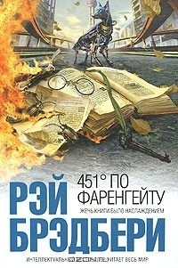

Знание – сила. Сила – в правде.
Проект «ВСЕЗНАЙ» – это книги о политике, истории и экономике, о философии и психологии, о развитии личности и здоровом образе жизни. Мы предлагаем фундаментальные знания и редкую информацию, которые помогают формировать мышление, видеть исторические закономерности, понимать суть происходящих вокруг процессов, воспитывать себя и своих детей, противостоять информационной пропаганде и жить осознанно.
Джордж Оруэлл
«1984»
Своеобразный антипод второй великой антиутопии XX века – "О дивный новый мир" Олдоса Хаксли. Что, в сущности, страшнее: доведенное до абсурда "общество потребления" – или доведенное до абсолюта "общество идеи"? По Оруэллу, нет и не может быть ничего ужаснее тотальной несвободы...
Главный герой — Уинстон Смит — живёт в Лондоне, работает в Министерстве правды и является членом внешней партии. Он не разделяет партийные лозунги и идеологию и в глубине души сильно сомневается в партии, окружающей действительности и вообще во всём том, в чём только можно сомневаться. Чтобы «выпустить пар» и не совершить какой –нибудь безрассудный поступок, ведёт дневник, в котором старается излагать все свои сомнения. На людях же притворяется приверженцем партийных идей. Однако опасается, что девушка Джулия, работающая в том же министерстве, шпионит за ним и хочет разоблачить его. В то же время полагает, что высокопоставленный сотрудник их министерства, член внутренней партии некий О’Брайен также не разделяет мнения партии и является подпольным революционером.
Олдос Хаксли
«О дивный новый мир»

Антиутопический сатирический роман английского писателя Олдоса Хаксли,опубликованный в 1932 году.Действие романа разворачивается в Лондоне далёкого будущего (в 26 веке нашейэры,а именно в 2540 году. Люди на всей Земле живут в едином «прогрессирующем»государстве, где возведены в основу следующие ценности: беззаботность (работа не принята во внимание по причине естественного желания ей заниматься), сексуальная свобода и потребление. Отсчитывается новое летоисчисление — Эра Т — с появления Форда Т. Потребление возведено в культ, символом потребительского бога выступает Генри Форд, а вместо крестного знамения люди «осеняют себя знаком Т».
Джордж Оруэлл
«Скотный двор»

В повести изображена эволюция общества животных, изгнавших со скотного двора(первоначально называвшегося ферма «Усадьба» или в других переводах — «Господский двор», «Райский уголок») его предыдущего владельца, жестокого мистера Джонса, от безграничной свободы к диктатуре свиньи по кличке Наполеон.
В повести Оруэлл показал перерождение революционных принципов и программ, то есть постепенный переход от идей всеобщего равенства и построения утопии к диктатуре и тоталитаризму. По мнению А. Бартова, «Скотный двор» — притча, аллегория на революцию 1917 года и последующие события в России.
Олдос Хаксли
«451° по Фаренгейту»
Мастер мирового масштаба, совмещающий в литературе несовместимое. Создатель таких ярчайших шедевров, как «Марсианские хроники», «451° по Фаренгейту», «Вино из одуванчиков» и так далее и так далее. Лауреат многочисленных премий. Это Рэй Брэдбери. Его увлекательные истории прославили автора не только как непревзойденного рассказчика, но и как философа, мыслителя и психолога. Магический реализм его прозы, рукотворные механизмы радости, переносящие человека из настоящего в волшебные миры детства, чудо приобщения к великой тайне Литературы, щедро раздариваемое читателю, давно вывели Брэдбери на высокую классическую орбиту. Собранные в этой книге произведения – достойное тому подтверждение.
Уильям Голдинг
«Повелитель мух»
«Повелитель мух» — первый опубликованный роман английского писателя, лауреата Нобелевской премии Уильяма Голдинга. Двадцать один отказ в публикации и долгожданное «да» от издательства Faber & Faber в 1954 году. Только одно но — просьба вычеркнуть из начала аллегорического произведения сцены о кошмарах ядерной войны. И в 60 –х годах роман уже в программах школ и колледжей.
Двое мальчиков в грязной и оборванной одежде лазили в джунглях рядом с обломками самолета. Авиакатастрофа. Пилот исчез. Как и другие дети с рейса. Их всех должны были эвакуировать из захваченного войной Лондона, но что –то пошло не так. Выйдя к морю, мальчики кинулись дуть в морскую раковину в надежде, что на странный звук отреагируют другие выжившие. Если они есть...
Связаться с нами
Подпишись на нас.